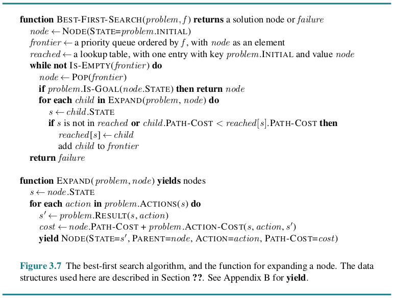

Chapter 3 Solving Problems by Searching¶
When the correct action to take is not immediately obvious, an agent may need to plan ahead: to consider a sequence of actions that form a path to a goal state. Such an agent is called a problem-solving agent, and the computational process it undertakes is called search.
Problem-solving agents use atomic representations, that is, states of the world are considered as wholes, with no internal structure visible to the problem-solving algorithms. Agents that use factored or structured representations of states are called planning agents.
We distinguish between informed algorithms, in which the agent can estimate how far it is from the goal, and uninformed algorithms, where no such estimate is available.
3.1 Problem-Solving Agents¶
If the agent has no additional information—that is, if the environment is unknown—then the agent can do no better than to execute one of the actions at random. For now, we assume that our agents always have access to information about the world. With that information, the agent can follow this four-phase problem-solving process:
GOAL FORMULATION: Goals organize behavior by limiting the objectives and hence the actions to be considered.
PROBLEM FORMULATION: The agent devises a description of the states and actions necessary to reach the goal—an abstract model of the relevant part of the world.
SEARCH: Before taking any action in the real world, the agent simulates sequences of actions in its model, searching until it finds a sequence of actions that reaches the goal. Such a sequence is called a solution.
EXECUTION: The agent can now execute the actions in the solution, one at a time.
It is an important property that in a fully observable, deterministic, known environment, the solution to any problem is a fixed sequence of actions. The open-loop system means that ignoring the percepts breaks the loop between agent and environment. If there is a chance that the model is incorrect, or the environment is nondeterministic, then the agent would be safer using a closed-loop approach that monitors the percepts.
In partially observable or nondeterministic environments, a solution would be a branching strategy that recommends different future actions depending on what percepts arrive.
3.1.1 Search problems and solutions¶
A search problem can be defined formally as follows:
A set of possible states that the environment can be in. We call this the state space.
The initial state that the agent starts in.
A set of one or more goal states. We can account for all three of these possibilities by specifying an \(Is\-Goal\) method for a problem.
The actions available to the agent. Given a state \(s\), \(Actions(s)\) returns a finite set of actions that can be executed in \(s\). We say that each of these actions is applicable in \(s\).
A transition model, which describes what each action does. \(Result(s,a)\) returns the state that results from doing action \(a\) in state \(s\).
An action cost function, denote by \(Action\-Cost(s,a,s\pr)\) when we are programming or \(c(s,a,s\pr)\) when we are doing math, that gives the numeric cost of applying action \(a\) in state \(s\) to reach state \(s\pr\).
A sequence of actions forms a path, and a solution is a path from the initial state to a goal state. We assume that action costs are additive; that is, the total cost of a path is the sum of the individual action costs. An optimal solution has the lowest path cost among all solutions.
The state space can be represented as a graph in which the vertices are states and the directed edges between them are actions.
3.1.2 Formulating problems¶
The process of removing detail from a representation is called abstraction. The abstraction is valid if we can elaborate any abstract solution into a solution in the more detailed world. The abstraction is useful if carrying out each of the actions in the solution is easier than the original problem.
3.2 Example Problems¶
A standardized problem is intended to illustrate or exercise various problem-solving methods. It can be given a concise, exact description and hence is suitable as a benchmark for researchers to compare the performance of algorithms. A real-world problem, such as robot navigation, is one whose solutions people actually use, and whose formulation is idiosyncratic, not standardized, because, for example, each robot has different sensors that produce different data.
3.2.1 Standardized problems¶
A grid world problem is a two-dimensional rectangular array of square cells in which agents can move from cell to cell.
Vacuum world
Sokoban puzzle
Sliding-tile puzzle
3.2.2 Real-world problems¶
Route-finding problem
Touring problems
Trveling salesperson problem (TSP)
VLSI layout problem
Robot navigation
Automatic assembly sequencing
3.3 Search Algorithms¶
A search algorithm takes a search problem as input and returns a solution, or an indication of failure. We consider algorithms that superimpose a search tree over the state-space graph, forming various paths from the initial state, trying to find a path that reaches a goal state. Each node in the search tree corresponds to a state in the state space and the edges in the search tree correspond to actions. The root of the tree corresponds to the initial state of the problem.
The state space describes the (possibly infinite) set of states in the world, and the actions that allow transitions from one state to another. The search tree describes paths between these states, reaching towards the goal. The search tree may have multiple paths to (and thus multiple nodes for) any given state, but each node in the tree has a unique path back to the root (as in all trees).
The frontier separates two regions of the state-space graph: an interior region where every state has been expanded, and an exterior region of states that have not yet been reached.
3.3.1 Best-first search¶
In best-first search we choose a node, \(n\), with minimum value of some evaluation function, \(f(n)\).
3.3.2 Search data structures¶
A node in the tree is represented by a data structure with four components
\(node.State\): the state to which the node corresponds;
\(node.Parent\): the node in the tree that generated this node;
\(node.Action\): the action that was applied to the parent’s state to generate this node;
\(node.Path-Cost\): the total cost of the path from the initial state to this node. In mathematical formulas, we use \(g(node)\) as a synonym for \(Path\-Cost\).
Following the \(PARENT\) pointers back from a node allows us to recover the states and actions along the path to that node. Doing this from a goal node gives us the solution.
We need a data structure to store the frontier. The appropriate choice is a queue of some kind, because the operations on a frontier are:
\(Is\-Empty(frontier)\) returns true only if there are no nodes in the frontier.
\(Pop(frontier)\) removes the top node from the frontier and returns it.
\(Top(frontier)\) returns (but does not remove) the top node of the frontier.
\(Add(node, frontier)\) inserts node into its proper place in the queue.
Three kinds of queues are used in search algorithms:
A priority queue first pops the node with the minimum cost according to some evaluation function, \(f\). It is used in best-first search.
A FIFO queue or first-in-first-out queue first pops the node that was added to the queue first; we shall see it is used in breadth-first search.
A LIFO queue or last-in-first-out queue (also known as a stack) pops first the most recently added node; we shall see it is used in depth-first search.
3.3.3 Redundant paths¶
A cycle is a special case of a redundant path.
As the saying goes, algorithms that cannot remember the past are doomed to repeat it. There are three approaches to this issue.
First, we can remember all previously reached states (as best-first search does), allowing us to detect all redundant paths, and keep only the best path to each state.
Second, we can not worry about repeating the past. We call a search algorithm a graph search if it checks for redundant paths and a tree-like search if it does not check.
Third, we can compromise and check for cycles, but not for redundant paths in general.
3.3.4 Measuring problem-solving performance¶
COMPLETENESS: Is the algorithm guaranteed to find a solution when there is one, and to correctly report failure when there is not?
COST OPTIMALITY: Does it find a solution with the lowest path cost of all solutions?
TIME COMPLEXITY: How long does it take to find a solution?
SPACE COMPLEXITY: How much memory is needed to perform the search?
To be complete, a search algorithm must be systematic in the way it explores an infinite state space, making sure it can eventually reach any state that is connected to the initial state.
In theoretical computer science, the typical measure of time and space complexity is the size of the state-space graph, \(|V|+|E|\), where \(|V|\) is the number of vertices (state nodes) of the graph and \(|E|\) is the number of edges (distinct state/action pairs). For an implicit state space, complexity can be measured in terms of \(d\), the depth or number of actions in an optimal solution; \(m\), the maximum number of actions in any path; and \(b\), the branching factor or number of successors of a node that need to be considered.